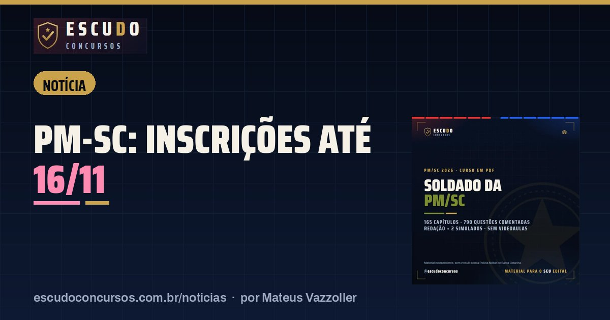

PM-SC Soldado: inscrições terminam segunda-feira, 16/11, e a idade máxima conta nesse dia
NotíciaPublicado em 12 de novembro de 2026 · por Mateus Vazzoller, ESCUDO Concursos

Quem quer vestir a farda da Polícia Militar de Santa Catarina como Soldado tem até segunda-feira, 16/11/2026, para se inscrever no concurso do Instituto AOCP. São 500 vagas, remuneração de R$ 8.505,00 mais R$ 550,00 de auxílio-alimentação e taxa de R$ 200,00. E é nessa mesma data que o edital mede a idade máxima: quem completa 30 anos até 16/11/2026 não pode se inscrever.
| Órgão | Polícia Militar de Santa Catarina (PMSC), Curso de Formação de Praças |
|---|---|
| Banca | Instituto AOCP |
| Vagas | 500 para Soldado, todas de ampla concorrência |
| Remuneração | R$ 8.505,00 mais R$ 550,00 de auxílio-alimentação |
| Inscrições | até 16/11/2026, taxa de R$ 200,00 |
| Prova | 13/12/2026, objetiva e redação |
Por que a idade conta no último dia de inscrição?
O item 3.1 do Edital nº 002/CCP/2026 pede que o candidato não tenha completado 30 anos até o último dia de inscrição. A data de referência, portanto, não é a da prova, nem a do curso de formação em Florianópolis: é 16/11/2026.
| Data de nascimento | Situação em 16/11/2026 |
|---|---|
| 17/11/1996 ou depois | Ainda não completou 30 anos |
| 16/11/1996 ou antes | Já completou 30 anos |
Quem está perto do limite deve fazer a conta com a data de nascimento do documento de identidade antes de pagar a taxa. A idade mínima segue outra regra: 18 anos, contados até a inclusão na corporação.
Os outros requisitos que eliminam por descuido
| Requisito | O que o edital exige |
|---|---|
| Escolaridade | Nível superior em qualquer área, em curso reconhecido pelo MEC |
| Habilitação | Carteira Nacional de Habilitação válida |
| Altura | Mínima de 1,60 m (homens) e 1,55 m (mulheres) |
| Cidade de prova | Escolhida na inscrição, sem troca depois |
A cidade merece atenção. A prova será aplicada em Balneário Camboriú, Blumenau, Canoinhas, Chapecó, Criciúma, Florianópolis, Joaçaba, Joinville, Lages, Rio do Sul, São Miguel do Oeste e Tubarão. Escolha a que fica mais perto de você, porque a opção feita até 16/11 vale até o dia da prova.
O pedido de isenção da taxa já passou: a janela foi de 26/10 a 28/10/2026.
O que vem depois de 16/11?
| Etapa | Data |
|---|---|
| Fim das inscrições | 16/11/2026 |
| Divulgação dos locais de prova | 02/12/2026 |
| Prova objetiva e redação, em até 5 horas | 13/12/2026 |
| Gabarito preliminar | 14/12/2026 |
Do fim das inscrições até a prova são quatro semanas. A objetiva tem 60 questões de cinco alternativas, e a Legislação Institucional, com o Estatuto dos Policiais Militares de Santa Catarina e as normas da própria PMSC, vale 10 delas. A redação, sobre Ordem Pública, vale 20 pontos e elimina quem faz menos de 10. Peso de cada matéria, notas mínimas e demais etapas estão no guia do concurso PM-SC.
O cupom PMSC37 do curso ESCUDO para Soldado PM/SC também vence em 16/11/2026: o PDF sai por R$ 37 em vez de R$ 47 até segunda-feira.
Confirme sempre o prazo no site do Instituto AOCP antes de pagar: esta notícia segue o Edital nº 002/CCP/2026 e não conseguimos consultar hoje se houve comunicado novo na página do concurso.
Curso ESCUDO Soldado da Polícia Militar de Santa Catarina em PDF: 165 capítulos e 790 questões comentadas, Redação e 2 simulados, de acordo com o edital. De R$ 47 por R$ 37 com o cupom PMSC37 até 16/11/2026.
Ver o curso
Perguntas frequentes
Até quando vão as inscrições da PM-SC para Soldado?
Até 16/11/2026, pelo site do Instituto AOCP. A taxa é de R$ 200,00.
Quem tem 30 anos pode se inscrever na PM-SC?
Não. O edital exige não ter completado 30 anos até o último dia de inscrição, 16/11/2026. Quem nasceu em 17/11/1996 ou depois ainda está dentro do limite nessa data.
Ainda dá para pedir isenção da taxa da PM-SC?
Não. O pedido de isenção foi aberto só de 26/10 a 28/10/2026.
Leia também
- NotíciaContagem/MG Assistente Administrativo: inscrições terminam terça-feira, 17/11, às 16h
12 de novembro de 2026 · Concurso Prefeitura de Contagem/MG: inscrições para Assistente Administrativo vão até 17/11/2026, às 16h, no IBGP. Boleto de R$ 70,00 pago até 18/11.
- NotíciaDPE-PB Técnico da Defensoria: inscrições terminam sexta-feira, 13/11, às 23h59
11 de novembro de 2026 · Concurso DPE-PB: inscrições para Técnico da Defensoria terminam em 13/11/2026, às 23h59, no site da FCC. Boleto de R$ 103,00 pode ser pago até 16/11.
- NotíciaPC-PE Agente de Polícia: pedido de isenção da taxa termina em 12/11, às 18h
10 de novembro de 2026 · Quem quer ser Agente da Polícia Civil de Pernambuco sem pagar os R$ 250,00 da taxa tem até 12/11, às 18h de Brasília, para pedir isenção no Cebraspe.
Guia completo do concurso: edital, vagas e o que cai · Mais notícias e dicas de concursos